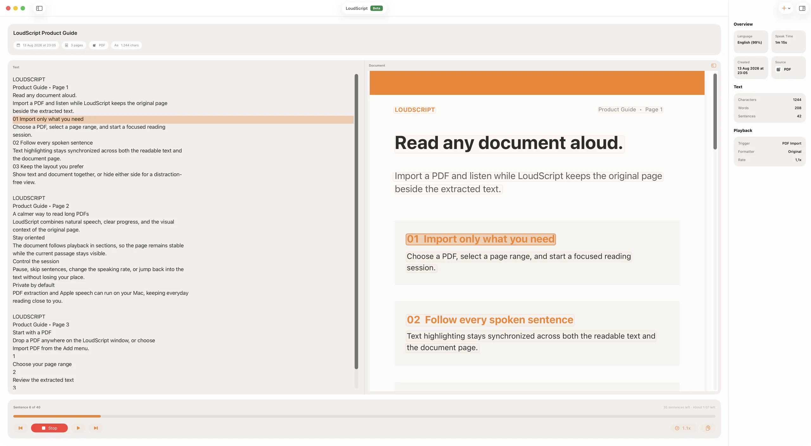
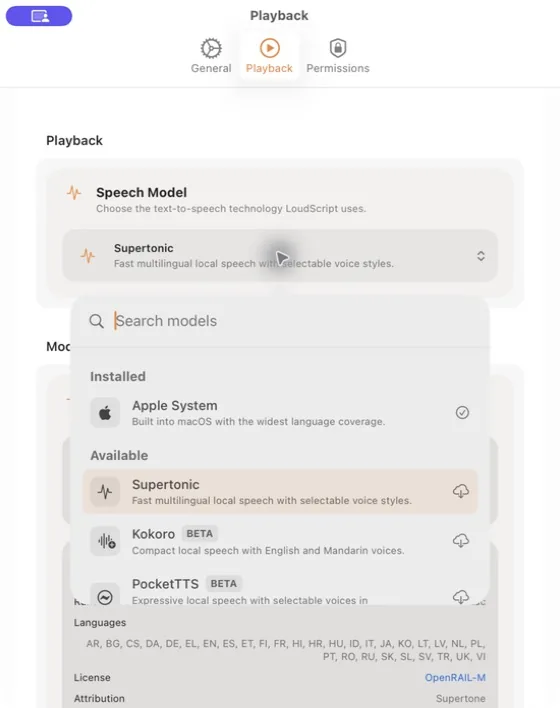
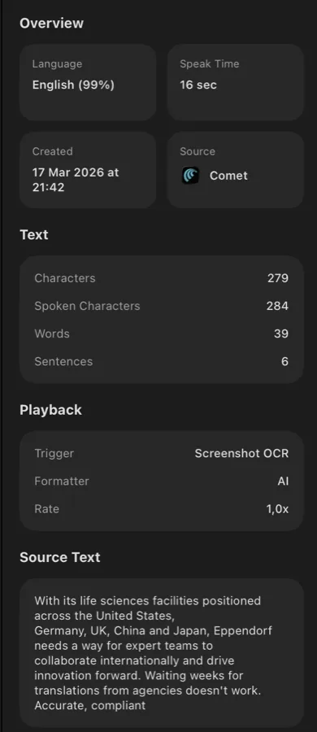

Grab text from any Mac app.
Right-click selected text and choose "Read with LoudScript" from the Services menu, or trigger it with a global keyboard shortcut.
LoudScript is a free text-to-speech app for Mac. Select text in any app, capture words from screenshots, and listen with natural voices while you keep working.
Notarized DMG download. Requires macOS 15.6 or later.

Right-click selected text and choose "Read with LoudScript" from the Services menu, or trigger it with a global keyboard shortcut.
When text is locked in images or app interfaces, capture the screen and let built-in OCR extract and read it.
Use Apple's built-in voices or download Supertonic, Kokoro, or PocketTTS for local speech on your Mac.
A floating overlay tracks your listening progress and gives you instant controls without switching windows.
The floating overlay sits above your windows, highlights the current phrase as it's spoken, and keeps playback controls one click away.
Choose Apple, Supertonic, Kokoro, or PocketTTS, adjust reading speed, and optionally use AI formatting to improve phrasing before speech begins.

Every read is saved with the source app, detected language, character count, and original text. Search and replay past entries whenever you need them.

Select text in any app, capture a screenshot, or type directly into LoudScript.
LoudScript uses your selected speech model, falls back to Apple if needed, and starts reading with a floating overlay.
Your history keeps every entry with metadata so you can replay, copy, or reference it.
Hear drafts, emails, and scripts aloud to catch missing words, awkward phrasing, and repetition.
Listen to selected passages while taking notes, reviewing material, or giving your eyes a break.
Use screenshot OCR when an image, PDF viewer, or interface will not let you select the words you need.
Let the floating player stay above your windows while LoudScript reads in the background.
Use the Services menu or Option-Command-R in browsers, editors, email, and other Mac apps.
Screenshot OCRCapture words that cannot be selected, extract them with macOS OCR, and listen.
Local voicesSee which local engine fits your Mac, languages, download size, and voice preferences.
Select text in any app and choose Read with LoudScript from the Services menu, or press Option-Command-R after enabling Selected Text access.
Yes. When text cannot be selected, LoudScript can capture a screen region, use built-in macOS OCR to extract the text, and read it aloud. Screen Recording permission is required for capture.
Yes for speech synthesis. Apple voices work on-device, and Supertonic, Kokoro, and PocketTTS run locally after their optional model downloads. Optional AI formatting can send text to a third-party provider when you enable it.
LoudScript requires macOS 15.6 or later. Apple voices and Supertonic support Intel and Apple silicon Macs. Kokoro and PocketTTS require Apple silicon.
Free, notarized direct download. No App Store account needed.